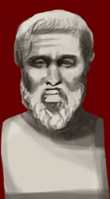

Plato
428/7 - 348/7 BC

Plato was a Greek philosopher whose work still influences how people think about politics. His most famous works include the Symposium, Phaedo and the Republic. In the Republic he describes his ideal type of government, where only very wise men can rule.
In 387BC Plato founded a school at the Academy, a gymnasium in Athens. This was the first university.
|